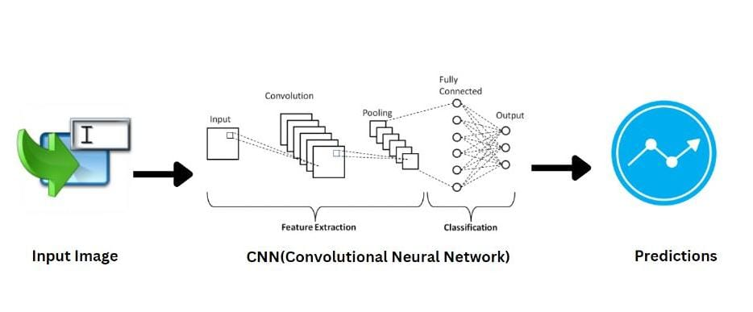

Our prime goal is to create a platform for hearing/speech impaired
people, which they can use to communicate smoothly at any
circumstance.
Make Your Own Sign
The user records his gestures into the model with the help of a
camera, and then label that particular gesture.

Practice Your Skills
When the user communicates with an oppositite party using sign
language, the pre-trained model then uses the recorded gestures to
relay the desired message in the form of text or speech to the
receiver.
The Model currently supports 21 alphabets/words signs in ASL , It can
be used by beginner user to practice his skills against pre-trained
model.
Learn New Stuffs
Tutorials are provided in assisting the user for a smooth learning
process it helps to learn ASL alphabets , Most commonly used phrases
in day to day communication and some signs of popular places like
'Mumbai' and objects like 'Police Station' , etc